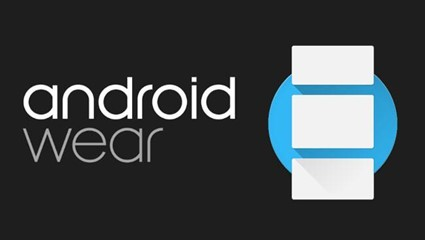

Instala ya la OTA en tu Android Wear
La nueva versión de Android Wearque trae a los relojes
las pantallas de reloj interactivas, el modo Together, el Traductor de
Google y el soporte Wi-Fi al LG G Watch R ya está
llegando vía OTA a los relojes durante estos días.

Si no quieres esperar para disfrutar de la última versión de Android Wear
puedes actualizar manualmente la OTA. De momento la OTA está disponible
para descargar para los LG G Watch, LG G Watch R, LG Watch Urbane y Sony
SmartWatch 3.
Instalar manualmente su actualización OTA
- LG G Watch: LCA43 desde LDZ22D
- LG G Watch R: LCA44B desde LDZ22D
- LG Watch Urbane: LCA44B desde LDZ22D
- Samsung Gear Live: No disponible
- Sony SmartWatch 3: LCA43 desde LDZ22D
- Asus ZenWatch: No disponible
Para actualizar manualmente necesitamos tener instalado el SDK de Android
y seguir los siguientes pasos:
-
Descargar el archivo que nos corresponda de la actualización respecto a
nuestro dispositivo y versión actual.
- Guardar el ZIP en la carpeta Platform-tools del Android SDK.
-
Activar las opciones de Opciones de desarrollo de nuestro Android Wear:
Ajustes > Acerca de, y pulsar siete veces sobre "número de compilación".
-
Activar la Depuración ADB: Ajustes > Opciones de desarrollo > Depuración
ADB > Sí
-
Conectar el reloj al ordenador por USB a través de su base de carga o
por Bluetooth si activamos en Opciones de desarrollo la opción Depurar
por Bluetooth.
-
Abrir en el ordenador una ventana de comandos y dentro de la carpeta
Platform-tools escribir adb reboot-bootloader para entrar al bootloader.
Aceptar la depuración en la pantalla del reloj.
-
Entrar al Recovery Mode tocando de las teclas virtuales que aparecen en
el reloj.
-
Cuando aparezca un icono de Android con una exclamación tocar la
pantalla.
-
Seleccionar apply update from adb deslizando el dedo con un gesto hacía
abajo para ir bajando de opción.
-
Escribir desde el terminal o ventana de comandos de nuestro ordenador la
instrucción adb sideload junto al nombre de la actualización. Por
ejemplo:
-
adb sideload
20ffa54cc8c2d942511dc6b0cbc55071c7f422cc.signed-lenok-LCA44B-from-LDZ22D.20ffa54c.zip
Una vez instalada la actualización tan sólo tenemos que reiniciar el
dispositivo seleccionando la opción reiniciar y deslizando el dedo hacía
un lateral de la pantalla. Este proceso dejará el dispositivo actualizado
respetando nuestros datos ya que es lo que haría la OTA automáticamente.